Kapitola 6 - Řady
Obsah:
1. Přehled řad
1.1 Základní rozdělení
1.2 Blokové typy
1.3 Řetězcové typy
2. Organizace řady
2.1 Délka
2.2 Čelo
2.3 Chvost
2.4 Index
2.5 Odsazení
3. Manipulace s řadami
3.1 Procházení řadami
3.2 Přeskakování
3.3 Vyjímání hodnot
3.4 Vyjímání sub-řad
3.5 Vkládání a připojování
3.6 Odebírání hodnot
3.7 Změna hodnot
4. Funkce řad
4.1 Tvořící funkce
4.2 Navigační funkce
4.3 Informační funkce
4.4 Extrakční funkce
4.5 Modifikační funkce
4.6 Vyhledávací funkce
4.7 Pořadné funkce
4.8 Množinové funkce
4.9 Ověřovací funkce
5. Vytvoření a kopírování řad
5.1 Prostá kopie
5.2 Mělká kopie
5.3 Hluboká kopie
5.4 Částečná kopie
5.5 Počáteční kopie
6. Iterace řad
6.1 Smyčka foreach
6.2 Smyčka while
6.3 Smyčka forall
6.5 Funkce break
7. Prohledávání řad
7.1 Funkce find
7.2 Upřesnění funkce find
7.3 Upřesnění part
7.4 Upřesnění tail
7.5 Zpětné hledání
7.6 Upřesnění match
7.7 Hledání s žolíkem
7.8 Opakované hledání
7.9 Funkce select
7.10 Hledání a výměna
8. Třídění řad
8.1 Jednoduché třídění
8.2 Skupinové třídění
8.3 Relační funkce
9. Řady a množiny
9.1 Funkce unique
9.2 Funkce intersect
9.3 Funkce union
9.4 Funkce exclude
9.5 Funkce difference
10. Vícečetné proměnné
11. Modifikační upřesnění
11.1 Part
11.2 Only
11.3 Dup
1. Přehled řad
Koncept řad (series) je používaný téměř ve všech útvarech Redu. Abychom pochopili Red, je nutné pochopit vytváření řad a manipulaci s nimi.
Slovo series! je označení supertypu, zahrnujícího tyto základní datové typy: binary! block! file! hash! image! paren! path! string! url! vector! tag! (plus get-path! lit-path! set-path!).
Všechny tyto datové typy lze rozdělit do několika mezilehlých nadřazených 'pseudotypů': any-blok (zahrnuje any-path) a any-string.
1.1 Základní rozdělení
Pseudo-typ |
Popis |
Series! | <>
Zahrnuje pseudotypy any-block! a any-string! |
Any-path! |
Zahrnuje typy path!, get-path!, lit-path! a get-path!. |
|
Any-block!
|
Zahrnuje typy: block!, hash!, paren!, vector! a pseudotyp any-path!
|
|
Any-string!
|
Zahrnuje typy: binary!, email!, file!, image!, tag!,string!, url!
|
1.2 Blokové typy
|
Typ bloku
|
Popis
|
|---|
|
Block!
|
Bloky hodnot
|
|
Paren!
|
Bloky hodnot v kulatých závorkách
|
|
Path!
|
Cesty hodnot
|
|
Hash!
|
Associative arrays
|
|
Vector!
|
Blok se stejným typem hodnot
|
1.3 Řetězcové typy
|
Typ řetězce
|
Popis
|
|---|
|
String!
|
Řetězce znaků
|
|
Binary!
|
Řetězce bajtů
|
|
Tag!
|
Tagy HTML a XML
|
|
File!
|
Názvy souborů
|
|
URL!
|
Internetové (uniform resource locators) adresy
|
|
Email!
|
Emailové adresy
|
|
Image!
|
Data zobrazení
|
2. Organizace řady
Řada je indexovaná množina hodnot. Číslování položek začíná číslicí 1 na první pozici, označované jako head (čelo).
Poslední (nečíslovanou) pozicí je prázdné pole, zvané tail (chvost). Číslování končí před chvostem.
Kromě tohoto statického uspořádání existuje v mechanizmu řady interní útvar (někdy zvaný iterátor), jehož součástí je takzvané ukazovátko neboli index, které se může libovolně posouvat pomocí navigačních funkcí (viz) od čela až po chvost včetně. Implicitní postavení ukazovátka je v 1. pozici v čele.
2.1 Délka
Délka (length) řady je počet položek (hodnot u bloku a znaků u řetězce) od aktuální pozice ukazovátka až po chvost (tail) řady. Je-li ukazovátko v čele (head) řady, potom je délkou počet všech členů řady.
Funkce length? vrací počet položek od aktuální pozice ukazovátka (inklusivně) až po chvost (exklusivně).
colors: [blue red green]
length? colors
3
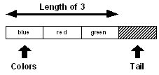
Je-li pozice indexu nastavena (redefinicí) na další hodnotu:
colors: next colors redefinice - nová deklarace stávající proměnné
length? colors
== 2
změní se délka na dvě:
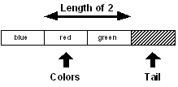
ale zůstává povědomí o původním čele:
head? colors
== false
Důležitá poznámka:
Ukazovátko lze přemístit pouze u pojmenované řady a to redeklarací jejího názvu, přičemž lze ponechat původní název nebo zvolit nový.
Obě takto vytvořené proměnné jsou schopny reflektovat úplnou hodnotu původní proměnné.
Ukážeme si to na příkladě:
head colors
== [blue red green] původní hodnotu máme v záloze
colors
== [red green] ale index máme na dvojce
colors: head colors
== [blue red green] čelo nám vrátí nová deklarace
2.2 Čelo
Čelo (head) řady je pozice její první hodnoty.
Je-li ukazovátko nastaveno na čelo (imlicitní postavení), vrátí funkce head? hodnotu "true":
data: [1 2 3 4 5]
head? data
true
data: next data
head? data
false
2.3 Chvost
Chvost (tail) řady je pozice prázdného pole bezprostředně za poslední hodnotou řady. Je-li ukazovátko nastaveno na chvost, vrátí funkce tail? hodnotu "true":
data: [1 2 3 4 5] deklarace pojmenované řady
tail? data
== false index je implicitně na počátku
pata: tail data nová deklarace řady
== []
head pata
== [1 2 3 4 5] pata zná všechna svá data
pata
== [] ale má index ve chvostu
Funkce empty? je ekvivalentní funkci
tail?.
empty? data
true
Vrací-li funkce empty? hodnotu true, znamená to, že mezi aktuální pozicí ukazovátka a chvostem nejsou žádné hodnoty, což ovšem neznamená, že nejsou žádné hodoty před ukazovátkem. Potřebujem-li zjistit, zda je řada prázdná od čela ke chvostu, použijeme:
empty? head data
false což znamená, že prázdná není
2.4 Index
Index je pozice položky od čela řady. Chceme-li určit aktuální polohu ukazovátka, použijeme funkci index?:
data: [1 2 3 4 5]
index? data
1
data: next data ukazovátko posunuto o 1 místo vpravo
index? data
2
data: tail data ukazovátko posunuto na chvost
index? data
6
Všimáme si, že trvalou změnu indexu zařídíme redefinicí proměnné, která na předmětnou řadu ukazuje.
2.5 Odsazení
Vzdálenost mezi dvěmi pozicemi řady (offset) lze zjistit pomocí funkce offset?.
data: [1 2 3 4]
data1: next data
data2: back tail data
offset? data1 data2
== 2
Offsetem v tomto případě je rozdíl mezi pozicí 2 a pozicí 4:
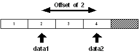
Právě prezentované zkoumání lze také provést jednodušeji:
offset? (next data) (back tail data)
== 2
3. Manipulace s řadami
Na příkladu některých typů vidíme, že jejich společným rysem je výčet kompozitních hodnot s pevným umístěním v řadě:
bnr: #{3A189256} ; binary
blk: [bim bam bum] ; block
prn: (5 "osel" [] true) ; paren
pth: %src/proj/bin ; path
str: "phantom" ; string
url: http://www.rebol.com/reboldoc.html
Manipulace s řadami bude předvedena na útvaru typu block!. Nutno vzít v úvahu, že každý z uvedených typů může mít svá specifika.
3.1 Procházení řadami
Protože je řada uspořádaná množina hodnot, lze přecházet od jedné pozice k druhé. Jako příklad si vezměme řadu tří barev, definovanou v následujícím bloku:
colors: [red green blue]
První pozice v bloku se nazývá head (čelo). Poslední pozice bloku se nazývá tail (chvost). Tato pozice zaujímá místo za posledním definovaným slovem bloku. Grafické zobrazení bloku může vypadat takto:
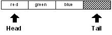
Vidíme, že chvost je až za koncem bloku. Důležitost tohoto uspořádání se ozřejmí později.
Proměnná colors odkazuje vždy na konkretní místo v bloku, implicitně na čelo bloku:
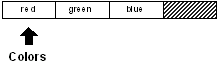
Zda je ukazovátko na začátku bloku zjistíme dotazovací funkcí:
head? colors
true
Proměnná colors tedy odkazuje na první pozici bloku, což lze také ověřit jinou dotazovací funkcí:
index? colors
1
Délka bloku je tři:
length? colors
3
První položkou bloku je:
first colors
red
Druhou položkou bloku je:
second colors
green
Všimněte si rozdílu mezi příkazy:
next colors
[green blue] zobrazení řady začíná na označené pozici
print next colors
0.255.0 0.0.255 ; příkaz print zobrazí některá slova jako literály
Přesun na další pozici bloku zajistí redefinice proměnné colors:
colors: next colors
[green blue]
Nyní ukazovátko ukazuje na druhou pozici bloku:
Jak již víme, původní definici bloku si prostředí Redu pamatuje a stále zůstává ve hře.
Ukazovátko proměnné colors již ale neukazuje na čelo bloku:
head? colors
false
nýbrž na druhou pozici,
index? colors
2
která je pro nově deklarovanou proměnnou vedena jako první:
first colors
green
Upravená řada nemá čelo (head? colors --> == false) ale to stále exisuje pro původní definici
head colors
== [red green blue]
Délka bloku bloku colors je nyní:
length? colors
2
Hodnotu další barvy vydolujeme příkazem
second colors
blue
Můžeme se posunout na další pozici a získat podobné výsledky:
colors: next colors
== blue
index? colors
3
first colors
blue
length? colors
1
Schéma bloku nyní vypadá takto:
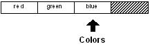
Proměnná colors nyní odkazuje na poslední barvu bloku ale dosud ne na chvostovou pozici.
tail? colors
false
Abychom se dostali na chvost, musíme se ještě posunout:
colors: next colors
[]
Nyní ukazuje proměnná colors přímo do chvostu bloku.
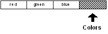
Aplikací známých funkcí dostáváme:
tail? colors
true
index? colors
4
length? Colors
0
first colors
== none
Má-li blok nulovou délku, nemá žádný první (druhý, ...) člen.
Je také možné, vracet se v bloku zpátky. Napíšeme-li:
colors: back colors redefinice!
přesuneme ukazovátko proměnné colors o jednu pozici zpět:
Stejný kód bude pracovat jako předtím:
index? colors
3
first colors
blue
3.2 Přeskakování
V předcházejících příkladech jsme posouvali ukazovátko o jedno místo vpřed či vzad. Někdy je však zapotřebí vyvolat výraznější posun. K tomu se používá funkce skip. Předpokládejme, že proměnná colors ukazuje na čelo bloku:
Přesun o dvě místa vpřed způsobíme novou deklarací proměnné:
colors: skip colors 2
Novou pozici potvrzují tyto kódy:
index? colors
3
first colors
blue
Posun zpět o jednu pozici způsobíme deklarací:
colors: back colors
případně
colors: skip colors -1
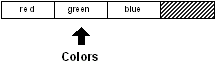
first colors
green
Příkaz ke skoku před čelo nebo za chvost není respektován a místo něj se provede přesud do čela nebo chvostu:
colors: skip colors 20
[]
tail? colors
true
colors: skip colors -100
[red green blue]
head? colors
true
Pro skok přímo do čela řady použijeme deklaraci:
colors: head colors
head? colors
true
first colors
red
Podobně lze adresovat přímo chvost řady:
colors: tail colors
tail? colors
true
3.3 Vyjímání hodnot
V některých předchozích příkladech byly použity ordinální (pořadové) funkce first a second k výpisu určitých hodnot v řadě. Úplný výčet těchto funkcí je tento:
first
second
third
fourth
fifth
last
Ordinální funkce se používají při výběru z nejobvyklejších pozic v řadě. Zde je několik příkladů:
colors: [red green blue gold indigo teal]
first colors
red
third colors
blue
fifth colors
indigo
last colors
teal
Při uvedení číselné pozice se použije funkce pick:
pick colors 3
blue
pick colors 5
indigo
Zkrácený zápis používá formu path:
colors/3
blue
colors/5
indigo
Je třeba si pamatovat, že výběr se provádí relativně k aktuálně platné pozici ukazovátka.
Vyjímání hodnoty mimo pole řady generuje chybu u ordinálních funkcí a vrací hodnotu none v případě funkce pick nebo formy path:
pick colors 10
none
colors/10
none
3.4 Vyjímání sub-řad
Je možné vyjmout více hodnot z řady najednou s použitím idiomu copy/part, kde část /part je upřesnění (refinement) funkce copy:
colors: [red green blue]
sub-colors: copy/part colors 2 chceme první dva prvky řady
[red green]
Graficky by to mohlo vypadat takto:
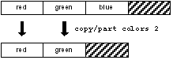
Číslice udává počet kopírovaných prvků. Nemá-li výběr začínat v čele, je nutné to uvést:
sub-colors: copy/part next colors 2 výchozí pozicí je green
[green blue]
Což lze ilustrovat takto:
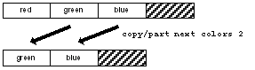
Délka kopírované sub-řady může být také definovaná její konečnou pozicí. Kopírování končí před určenou pozicí.
copy/part colors (next colors) závorky lze nepoužít
[red]
copy/part colors (back tail colors) dtto
[red green]
copy/part next colors back tail colors
[green]
To může být užitečné, když konečná pozice je nalezena jako vratná hodnota funkce find:
file: %image.jpg
copy/part file find file "."
image
3.5 Vkládání a připojování
Funkcemi insert a append vkládáme do řady nové elementy a zároveň měníme její parametry.
Mějme například proměnnou:
colors: [red green]
[red green]
se schematickým zobrazením:
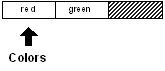
Novou hodnotu do čela řady vložíme příkazem:
insert colors 'blue
nebo
insert colors [blue]
Apostrof (') u hodnoty blue brání vyhodnocení této hodnoty, stejně jako hranaté závorky.
Bez tohoto opatření bychom vložili číselnou hodnotu slova "blue" (0.0.255), které je standardním názvem barvy v Redu.
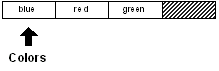
U proměnné colors se změnila hodnota i parametry řady:
colors
[blue red green]
Pokud změnu proměnné provedeme její explicitní redefinicí:
colors: insert colors 'blue
[red green]
dostaneme blok, jehož ukazovátko odkazuje na původní čelo a jehož délka se nezměnila:
colors
[red green]
length? colors
2
ale
head? colors
false
head colors
[blue red green]
Avšak:
index? colors
2
Na počátek se dostaneme redefinicí:
colors: head colors
[blue red green]
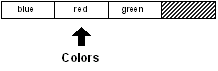
Vložení hodnoty lze provést ve kterémkoli místě řady včetně chvostu. Vložení do chvostu je adekvátní připojení (appending).
colors: tail colors
[]
insert colors 'gold
[]
colors
[gold]
Před vložením:
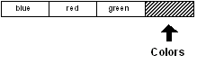
Po vložení:
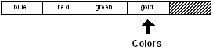
Slovo gold bylo vloženo před posunutý chvost řady.
Jiný způsob vkládání na konec řady je pomocí funkce append. Předchozí příklad bychom zapsali:
append colors 'gold
[blue red green gold]
Změnila se hodnota i parametry řady.
Funkce >insert a append také pro vložení přijímají blok argumentů:
colors: [red green]
[red green]
insert colors [blue yellow orange]
[red green]
colors
[blue yellow orange red green]
Chceme-li nové hodnoty vložit mezi slova red a
green, ukážeme na 'green':
colors: [red green]
[red green]
insert next colors [blue yellow orange]
[green]
colors
[red blue yellow orange green]
3.6 Odebrání hodnot
Je možné odebrat jednu či více hodnot z libovolného místa řady použitím funkce remove.
Začněme například blokem:
colors: [red green blue gold]
s tímto schematem:
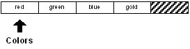
První hodnotu bloku lze odebrat bez explicitního označení místa:
remove colors
[green blue gold]
Schema se změní:
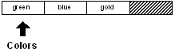
colors
[green blue gold]
Funkce remove odebere hodnotu z označeného místa:
remove next colors
[gold] odebírá se
colors
== [green gold] zůstává
Blok už vypadá takto:
Více hodnot lze odebrat doplněním o upřesnění /part.
remove/part colors 2
[]
Tímto jsme odebrali zbývající hodnoty, ponechávaje prázdný blok:
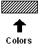
Podobně jako u insert/part, může být pro remove/part argumentem pozice uvnitř bloku.
Odebrání všech zbývajících hodnot je častá operace.
Funkce clear odebere všechny hodnoty od aktuální pozice ukazovátka až po chvost.
Na příklad:
colors: [blue red green gold]
Schematicky:
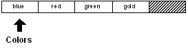
Všechno po "blue" lze odebrat příkazem:
clear next colors
[]
colors
[blue]
Schema ukazuje:
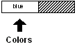
Celý blok lze snadno smazat příkazem:
clear colors
[]
3.7 Změna hodot
Změnu hodnot je možné provést několikerým způsobem: funkcí change, poke nebo redefinicí elementu.
Výchozí blok:
colors: [blue red green gold]
Funkcí change změníme druhou položku:
change next colors 'yellow
== [green gold] informativní odezva
colors
== [blue yellow green gold]
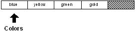
Funkcí poke změníme třetí položku:
poke colors 3 'red
== [red] rovněž informativní odezva
colors
== [blue yellow red gold]
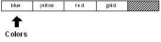
Redefinicí změníme první hodnotu:
colors/1: 'brown
== brown
colors
== [brown yellow red gold]
4. Funkce řad
Zde je přehled funkcí, které manipulují s řadami. Většina již byla podrobně popsána v předchozím textu. Ostatní budou popsány podrobněji v tomto odstavci.
4.1 Tvořící funkce
|
Funkce
|
Popis
|
|---|
|
make
|
Vytvoří novou řadu zadaného typu.
|
|
copy
|
Kopíruje řadu.
|
4.2 Navigační funkce
|
Funkce
|
Popis
|
|---|
|
next
|
Vrací další pozici v řadě.
|
|
back
|
Vrací předchozí pozici v řadě.
|
|
head
|
Vrací čelní pozici v řadě.
|
|
tail
|
Vrací chvostovou pozici v řadě.
|
|
skip n
|
Vrací skokovou pozici na plus či minus N (= celé číslo).
|
|
at n
|
Vrací pozici plus či minus N ale používá stejné indexování jao fce pick.
|
4.3 Informační funkce
|
Funkce
|
Popis
|
|---|
|
head?
|
Vrací true, je-li ukazovátko v čele řady.
|
|
tail?
|
Vrací true, je-li ukazovátko ve chvostu řady.
|
|
index?
|
Vrací odstup od čela řady.
|
|
length?
|
Vrací délku řady od aktuální pozice ukazovátka.
|
|
offset?
|
Vrací vzdálenost mezi dvěmi pozicemi řady.
|
|
empty?
|
Vrací true, je-li řada prázdná (od aktuální pozice ke chvostu).
|
4.4 Extrakční funkce
|
Funkce
|
Popis
|
|---|
|
pick
|
Vyjme jedinou hodnotu z pozice v řadě.
|
|
copy/part
|
Vyjme sub-řadu z řady.
|
|
first
|
Vyjme první hodnotu z řady.
|
|
second
|
Vyjme druhou hodnotu z řady.
|
|
third
|
Vyjme třetí hodnotu z řady.
|
|
fourth
|
Vyjme čtvrtou hodnotu z řady.
|
|
fifth
|
Vyjme pátou hodnotu z řady.
|
|
last
|
Vyjme poslední hodnotu z řady.
|
4.5 Modifikační funkce
|
Funkce
|
Popis
|
|---|
|
insert
|
Vloží hodnotu do řady.
|
|
append
|
Připojí hodnotu před chvost řady.
|
|
remove
|
Odebere hodnotu z řady.
|
|
clear
|
Smaže hodnoty ke chvostu řady.
|
|
change
|
Změní hodnoty v řadě.
|
|
poke
|
Změní hodnoty na zadané pozici v řadě.
|
4.6 Vyhledávací funkce
|
Funkce
|
Popis
|
|---|
|
find
|
Vyhledá hodnotu v řadě.
|
|
select
|
Vyhledá přidruženou hodnotu v řadě.
|
|
replace
|
Vyhledá a nahradí hodnoty v řadě.
|
|
parse
|
Porovná hodnoty v řadě.
|
4.7 Pořadné funkce
|
Funkce
|
Popis
|
|---|
|
sort
|
Uspořádá hodnoty v řadě podle pořadí.
|
|
reverse
|
Převrátí pořadí hodnot v řadě
|
4.8 Množinové funkce
|
Funkce
|
Popis
|
|---|
|
unique
|
Vrátí jedinečnou množinu hodnot, bez duplikátů.
|
|
intersect
|
Vrátí pouze ty hodnoty, které se nacházejí v obou řadách.
|
|
union
|
Returns the combined values from two series.
|
|
exclude
|
Vrátí rozdíl mezi řadami.
|
|
difference
|
Vráti ty hodnoty, které se nenacházejí v žádné řadě.
|
4.9 Ověřovací funkce
Ověření typu bloku:
Block? Paren? Path? List? Hash?
Ověření typu řetězce:
String? Binary? Tag? File? URL?
Email? Image? Issue?
Jiná ověření typu řad:
Series? Any-block? Any-string?
5. Vytvoření a kopírování řad
Nové řady se vytvářejí funkcemi make a
copy.
Funkci make použijeme k vytvoření (prázdné) řady z datového typu řady a z odhadnuté počáteční velikosti. Ukáže-li se, že je odhadnutá velikost příliš malá, je automaticky rozšířena, avšak lehce na úkor výkonu.
block: make block! 50
== []
string: make string! 10000
== ""
file: make file! 64
== %""
Funkce copy vytvoří novou řadu kopírováním existující:
string: "Message in a bottle"
new-string: copy string
block: copy [] prázdný blok
string: copy copy "" prázdný string
5.1 Prostá kopie
Prostá kopie pojmenované řady se vytvoří jako její duplikát:
days: ["sun" ["mon" "tue"] "wed"]
== ["sun" ["mon" "tue"] "wed"]
dny: days
== ["sun" ["mon" "tue"] "wed"]
Obě proměnné odkazují na stejnou řadu a je zcela zřejmé, že změna u jedné proměnné se projeví u druhé proměnné a vice versa.
5.2 Mělká kopie
Takzvanou mělkou (shallow) kopii vytvoříme příkazem copy. Mělká kopie je však "nezávislá" pouze pro singletony bloku. Prvky vnořených objektů jsou sdíleny originálem i kopií, což má za následek, že dodatečná úprava jednoho vnořeného objektu se projeví i u druhého objektu:
blk-one: ["abc" [1 2 3] 12]
["abc" [1 2 3] 12]
blk-two: copy blk-one shallow copy
["abc" [1 2 3] 12]
Zadaný blok se skládá ze dvou řad a jednoho singletonu. Vnořené řady (typu string! a block!) se skládají pouze ze singletonů.
Explicitní kopírování singletonů (i vnořených) vytváří jejich nezávislou kopii, zatímco kopírování složených elementů vytváří jejich závislou kopii.
blk-one/2: [4 5 6]
blk-one
== ["abc" [4 5 6] 12]
blk-two
== ["abc" [1 2 3] 12] změna celého bloku je nezávislá
blk-one/1/2: #"f"
blk-one
== ["afc" [4 5 6] 12]
blk-two
== ["abc" [1 2 3] 12] změna singletonu (zde vnořeného) rovněž
5.2 Hluboká kopie
Nezávislou (autonomní, "hlubokou") kopii objektu s vloženými objekty vytvoříme pomocí funkce s upřesněním copy/deep:
days: ["sun" ["mon" "tue"] "wed"] stringy jsou složené objekty!
== ["sun" ["mon" "tue"] "wed"]
dny: copy/deep days
== ["sun" ["mon" "tue"] "wed"]
days/2/1: "pon" změna celého objektu je nezávislá
days
== ["sun" ["pon" "tue"] "wed"]
dny
== ["sun" ["mon" "tue"] "wed"] u mělké kopie by dny měly také "pon"
Trochu se to plete. Mohlo by pomoci vysvětlení, že u singletonů se kopírují přímo hodnoty, zatímco u složených objektů se kopírují odkazy na tyto hodnoty.
Když u složeného objektu ukážeme přímo na vnořený singleton, kopíruje se hodota tohoto singletonu.
5.3 Částečné kopie
Upřesnění /part funkce copy přijímá jediný argument, jímž je buď celé číslo, určující počet kopírovaných položek nebo pozice v řadě, určující poslední kopírovanou položku.
str: "Message in a bottle"
== Message in a bottle
copy/part str 4 počet kopírovaných položek
== "Mess"
copy/part str (find str " ") označení horní meze
== "Message"
new-str: copy/part (find str "in") (find str "bottle")
meze inklusive a exclusive
== "in a"
blk: [ages [10 12 32] sizes [100 20 30]]
[ages [10 12 32] sizes [100 20 30]] blok s vnořenými bloky
new-blk: copy/part blk 2
[ages [10 12 32]]
5.4 Počáteční kopie
Vytvoření počáteční kopie si ukážeme na ilustračním příkladě. Mějme funkci print-it, která při každém volání vytiskne slabiku "ha":
print-it: func [/local str] [
str: "" počáteční hodnota proměnné
insert str "ha"
print str
]
print-it
ha
print-it
haha
print-it
hahaha
Jak vidíme na výstupech, vkládá funkce insert nové a nové slabiky "ha" do proměnné str, což nebyl náš záměr. Abychom se tomu vyhnuli, musí funkce print-it kopírovat prázdný řetězec nebo použít funkci make.
print-it: func [/local str] [
str: copy ""
insert str "ha"
print str
]
print-it
ha
print-it
ha
print-it
ha
6. Iterace řad
K procházení řadou lze použít iterační smyčku. Existuje několik funkcí, které tento iterační proces automatizují: foreach, while a forall.
6.1 Smyčka "foreach"
Smyčka foreach prochází řadou a pro každý prvek řady provede předepsaný úkon.
Funkce foreach přijímá dva argumenty: libovolně zvolený název prvku řady a název řady. Tělo funkce obsahuje příkaz, který se má pro každý prvek řady provést.
colors: [red green blue yellow orange gold]
foreach barva colors [print barva]
red
green
blue
yellow
orange
gold
foreach [c1 c2] colors [print [c1 c2]] pattern matching!
red green
blue yellow
orange gold
foreach [c1 c2 c3] colors [print [c1 c2 c3]] pattern matching!
red green blue
yellow orange gold
Schopnost provádět "pattern matching" je velmi užitečná u bloků se souvisejícími hodnotami:
people: [
"Bob" bob@example.com 12
"Tom" tom@example.net 40
"Sam" sam@example.org 22
]
foreach [name email age] people [
print [name email age]
]
Bob bob@example.com 12
Tom tom@example.net 40
Sam sam@example.org 22
Poznámka: Smyčka foreach neposouvá ukazovátko (index), tudíž není zapotřebí resetovat parametry proměnné 'colors' - viz smyčka 'while'.
6.2 Smyčka "while"
Smyčka while provádí opakovaný výpočet pro každý prvek řady, pokud je splněna předem stanovená podmínka.
Funkce while přijímá dva argumenty: podmínku a název řady. Tělo funkce obsahuje příkaz, který se má provést pro každý vyhovující prvek řady plus příkaz, který postupuje řadou.
colors: [red green blue yellow orange]
while [not tail? colors] [ : pokud není ukazovátku ve chvostu
print first colors : proveď úkon
colors: next colors : a posuň ukazovátko
]
red
green
blue
yellow
orange
index? colors
== 6
Následující skript vloží slovo 'blue' před slovo 'yellow' při splnění podmínky uvnitř těla funkce:
colors: head colors pro jistotu: ukazovátko do čela řady
while [not tail? colors] [
if colors/1 = 'yellow [
colors: insert colors 'blue
]
colors: next colors
]
; ukazovátko je ve chvostu, proto reset:
head colors
== [red green blue yellow orange gold]
Funkce insert vkládá slovo na pozici před ukazovátkem!
Následující skript bezpečně odebere slovo 'blue' z řady:
colors: head colors
while [not tail? colors] [
either colors/1 = 'blue [ 'either' provede jeden z bloků
remove colors
][
colors: next colors
]
]
Dosažením chvostu končí běh smyčky.
6.3 Smyčka "forall"
Smyčka forall je stručnější obdoba smyčky while. Provede příkaz z bloku pro všechny prvky řady, počínaje aktuálně prvním.
colors: [red green blue yellow orange]
forall colors [print first colors]
red
green
blue
yellow
orange
Po ukončení iterace je ukazovátko na pozici head:
head? colors
true
Před dalším použitím není nutné proměnnou 'resetovat':
colors: head colors
[red green blue yellow orange]
Funkce forall prochází všemi prvky řady a přitom neposouvá ukazovátko ale posouvá si počátek číslování.
forall colors [
if colors/1 = 'blue [remove colors]
print first colors
]
red
green
yellow
orange
colors
[red green yellow orange]
6.5 Funkce "break"
Iteraci lze u všech smyček kdykoli ukončit při konfrontaci s vloženou funkcí break, umístěnou ve vyhodnocovacím bloku:
foreach number [1 2 4 8 16] [
if number > 4 [break]
print number
]
1
2
4
Podrobněji viz Expressions Chapter
7. Prohledávání řad
Funkce find vyhledává zadanou hodnotu nebo vzorek v blokových či řetězcových řadách. Tato funkce má mnohá upřesnění, která umožňují širokou škálu zadávacích parametrů.
7.1 Funkce "find"
Nejjednodušší a nejobvyklejší vyhledávací úlohou je nalezení hodnoty v bloku nebo řetězci. V tomto případě přijímá funkce find pouze dva argumenty: název prohledávané řady a hledanou hodnotu:
colors: [red green blue yellow orange]
[red green blue yellow orange
where: find colors 'blue
[blue yellow orange]
Nalezené místo se stává čelem nové řady.
Pokud se hledání nezdaří, vrací se hodnota none.
colors: [red green blue yellow orange]
find colors 'indigo
none
Funkce find může vyhledávat hodnoty také podle jejich typu.
items: [10:30 #256-15-752 Cindy "United"]
where: find items issue!
[#256-15-752 Cindy "United"]
where: find items string!
["United"]
7.2 Upřesnění funkce find
Funkci find lze doplnit mnohým upřesněním (refinements), které upřesňují způsob provedení funkce:
|
Refinement
|
Popis
|
|---|
|
/part
|
Omezí prohledávání řady určením délky nebo konečné pozice.
|
|
/only
|
Treats a series value as a single value.
|
|
/case
|
Při vyhledávání se rozlišuje velikost písma.
|
|
/any
|
Dovoluje vyhledávání porovnáváním s univerzálními symboly. Hvězdička (*) se shoduje s každým řetězcem, otazník (?) se shoduje s každým znakem.
|
|
/with
|
Dovoluje vyhledávání porovnáváním s jinými symboly než (*) a (?). To umožňuje přítomnost těchto symbolů ve vyhledávacím vzorci.
|
|
/match
|
Matches a pattern beginning at the current series position, rather than
finding the first occurrence of a value or string. Returns the tail
position if the match is found.
|
|
/tail
|
Při úspěšném hledání vrací chvostovou pozici shody (spíše než místo nálezu shody).
|
|
/last
|
Hledání shody začíná od chvostu řady směrem k čelu.
|
|
/reverse
|
Hledání shody začíná od aktuální pozice ukazovátka směrem k čelu./p>
| |
/dup
|
Hledání shody začíná od aktuální pozice ukazovátka směrem k čelu./p>
|
7.3 Upřesnění "part"
Upřesnění /part omezí vyhledávání na určitou část řady. Můžeme například omezit vyhledávání na zadaný řádek nebo část textu.
Podobně jako u insert/part a remove/part, přijímá find/part jako argument buď délku sub-řady nebo její konečnou pozici.
Následující příklad omezuje délku sub-řady na 3:
colors: [red green blue yellow blue orange gold]
probe find/part colors 'blue 3
== [blue yellow blue orange gold] == none pro n < 3
Následující hledání je omezeno na prvních 15 znaků:
text: "Keep things as simple as you can."
find/part text "as" 15
as simple as you can.
Jest rozuměti tomu tak, že nalezne-li find/part zadané slovo v zadaném úseku, vrátí celý zbytek řady. Nenalezne-li, vrací none.
Následující příklad používá koncovou pozici. Hledání je omezeno na jediný řádek textu:
text: {
This is line one.
This is line two.
}
start: find text "this"
end: find start newline
item: find/part start "line" end
print item
line one.
7.4 Upřesnění "tail"
Funkce find vrací sub-řadu od místa, kde byla hledaná položka nalezena. Upřesnění /tail vrací sub-řadu od místa, které následuje za nalezenou položkou. Zde je příklad:
filename: %script.txt
find filename "."
.txt
find/tail filename "."
txt
clear change find/tail filename "." "r"
filename
script.r
Příkaz clear je zde potřebný k odebrání xt, které následuje za t.
7.5 Zpětné hledání
Poslední příklad v předchozím odstavci by nemusel vrátit správný výsledek, kdyby měl název souboru více než jednu tečku. Na příklad:
filename: %new.script.txt
find filename "."
.script.txt
Zaměření na poslední tečku zajistí upřesnění /last, které prohledává řadu pozpátku.
find/last filename "."
.txt
Upřesnění /last lze kombinovat s upřesněním /tail:
find/tail/last filename "."
txt
Chceme-li pokračovat ve zpětném hledání až k čelu řetězce, použijeme upřesnění /reverse. Toto upřesnění provádí hledání od aktuální pozice směrem k čelu a vrací sub-řadu od nalezeného místa až ke chvostu.
where: find/last filename "."
where
.txt
find/reverse where "."
.script.txt
Povšimneme si, že /reverse pokračuje v hledání až na následující (směrem k čelu) pozici po předchozí shodě.
7.6 Upřesnění "match"
Upřesnění /match upravuje chování funkce find tak, že provádí "pattern matching" pro aktuální polohu ukazovátka řady. Toto upřesnění umožňuje provádět párovací (parsing) operace porovnáním další části řady s očekávaným vzorkem.
Při nalezené shodě se vrací zbytek řady:
blk: [1342 "Franklin" 12,52 "Circle"]
probe find/match blk integer!
["Franklin" 12,52 "Circle"]
blk: next blk
["Franklin" 12,52 "Circle"]
probe find/match blk string!
[12,52 "Circle"]
probe find/match blk "test"
none
str: "Keep things simple."
probe find/match str "keep"
" things simple."
print find/match str "things"
none
V právě uvedeném příkladu se nic nevyhledává. Počátek řady se buď shoduje nebo neshoduje. Pokud se shoduje, nabídne funkce zbytek řady, na jejímž počátku lze hledat další shodu.
Zde je jednoduchý parser s funkcí find/match:
grammar: [
["keep" "make" "trust"]
["things" "life" "ideas"]
["simple" "smart" "happy"]
]
parse-it: func [str /local new] [
foreach words grammar [
foreach word words [
if new: find/match str word [break]
]
if none? new [return false]
str: next new ;skip space
]
true
]
parse-it "Keep things simple"
true
parse-it "Make things smart"
true
parse-it "Trust life well"
false
Porovnávání (matching) je citlivé na velikost písma s upřesněním /case.
Schopnost /match lze značně rozšířit přidáním upřesnění /any, jak probíráno dále.
7.7 Hledání s žolíkem
Upřesnění /any umožňuje tak zvané "wildcard pattern matching". Otazník (?) a hvězdička (*) působí jako žolíky při vyhledávání jednoho či více znaků. Upřesnění /any může být použito ve spojení s funkcí find s upřesněním /match nebo bez něho.
Příklady:
str: "abcdefg"
find/any str "c*f"
cdefg
find/any str "??d"
bcdefg
email-list: [
mack@rebol.dom
judy@somesite.dom
jack@rebol.dom
biff@rebol.dom
jenn@somesite.dom
]
foreach email email-list [
if find/any email *@rebol.dom [print email]
]
mack@rebol.dom jack@rebol.dombiff@rebol.dom
Následující příklad používá upřesnění >/match při pokusu o porovnání vzorku s další částí řady:
file-list: [
%rebol.exe
%notes.html
%setup.html
%feedback.r
%nntp.r
%rebdoc.r
%rebol.r
%user.r
]
foreach file file-list [
if find/match/any file %reb*.r [print file]
]
rebdoc.rrebol.r
Pokud některý z žolíkových znaků je obsažen ve srovnávaném vzorku, lze použít náhradních žolíkových znaků ve spojení s upřesněním /with.
7.8 Opakované hledání
Funkci find lze použít opakovaně za účelem hledání vícerých výskytů hodnoty nebo řetězce. V tomto příkladě se vytisknou všechny řetězce, nalezené v bloku:
blk: load %script.red
while [blk: find blk string!] [
print first blk
blk: next blk
]
Další příklad počítá výskyt nových řádků ve skriptu. Používá upřesnění /tail aby se předešlo nekonečné smyčce a vrací pozici bezprostředně za shodou.
text: read %script.red
count: 0
while [text: find/tail text newline] [count: count + 1]
count ;; vrátí výsledek
Opakované hledání v opačném směru provedeme pomocí upřesnění /reverse. Následující příklad tiskne všechny indexované pozice v obráceném pořadí.
while [text: find/reverse tail text newline] [
print index? text
] ;; POZOR !! běží v nekonečné smyčce !!
7.9 Funkce "select"
Užitečnou variantou funkce find je funkce select, která vrací hodnotu, jež následuje za hodnotou vyhledanou. Funkce select se často používá pro vyhledání hodnoty v označených blocích dat. Funkce select přijímá tytéž argumenty jako funkce find: název řady a označení hodnoty.
Tato funkce však vrací pouze následující hodnotu, na rozdíl od funkce find, která vrací celý zbytek řady.
colors: [red green blue yellow orange]
select colors 'green
blue
Funkci select lze použít pro vyhledání hodnoty z jednoduché databáze:
email-book: [
"George" harrison@guru.org
"Paul" lefty@bass.edu
"Ringo" richard@starkey.dom
"Robert" service@yukon.dom
]
Konkretní emailovou adresu lokalizuje tento kód:
select email-book "Paul"
lefty@bass.edu
Funkci select lze použít při hledání bloku s vyhodnotitelnými výrazy. Například, u následujících dat:
cases: [
10 [print "ten"]
20 [print "twenty"]
30 [print "thirty"]
]
lze bloky vyhodnotit s použitím selektoru:
do select cases 10
ten
do select cases 30
thirty
7.10 Hledání a výměna
K náhradě hodnot v řadě lze použít funkci replace.
Tato funkce vyhledá zadanou hodnotu v řadě a nahradí ji novou hodnotou.
Tato funkce přijímá tři argumenty: název řady, nahrazovanou hodnotu a novou hodnotu.
str: "hello world hello"
probe replace str "hello" "aloha"
"aloha world hello"
data: [1 2 8 4 5]
probe replace data 8 3
[1 2 3 4 5]
probe replace data 4 `four
[1 2 3 four 5]
probe replace data integer! 0
[0 2 3 four 5]
Upřesnění /all použijeme k náhradě všech výskytů hodnoty v řadě, od aktuální pozice až po chvost.
probe replace/all data integer! 0
[0 0 0 four 0]
code: [print "hello" print "world"]
replace/all code 'print 'probe
probe code
[probe "hello" probe "world"]
do code
helloworld
str: "hello world hello"
probe replace/all str "hello" "aloha"
"aloha world aloha"
8. Třídění řad
Funkce sort poskytuje jednoduchou a rychlou metodu třídění řad. Nejužitečnější je u bloků dat, lze ji také použít pro řetězce znaků.
8.1 Jednoduché třídění
Nejjednoduššími příklady funkce sort jsou:
names: [Eve Luke Zaphod Adam Matt Betty]
probe sort names
[Adam Betty Eve Luke Matt Zaphod]
sort [321.3 78 321 42 321.8 12 98]
12 42 78 98 321 321.3 321.8
sort "plosabelm"
abellmops
Nutno vzít na vědomí, že funkce sort je desktruktivní k upravovaným řadám, neboť přeskupí jejich prvky. Abychom tomu zabránili, používáme funkci copy jako v následujícím příkladu:
probe sort copy names
Pořádání je implicitně necitlivé na velikost písma:
sort ["Fred" "fred" "FRED"]
Fred fred FRED
sort "G4C28f9I15Ed3bA076h"
0123456789AbCdEfGhI
To se změní s použitím upřesnění /case:
sort/case "gCcAHfiEGeBIdbFaDh"
ABCDEFGHIabcdefghi
sort/case ["Fred" "fred" "FRED"]
FRED Fred fred
sort/case "g4Dc2BI8fCF9i15eAd3bGaE07H6h"
0123456789ABCDEFGHIabcdefghi
Pořádat lze mnoho dalších datových typů:
sort [1.3.3.4 1.2.3.5 2.2.3.4 1.2.3.4]
1.2.3.4 1.2.3.5 1.3.3.4 2.2.3.4
sort [$4.23 $23.45 $62.03 $23.23 $4.22]
$4.22 $4.23 $23.23 $23.45 $62.03 ;; nechodí!
sort [11:11:43 4:12:53 4:14:53 11:11:42]
4:12:53 4:14:53 11:11:42 11:11:43
sort [11-11-1999 10-11-9999 11-4-1999 11-11-1998]
11-Nov-1998 11-Apr-1999 11-Nov-1999 10-Nov-9999 ;; nechodí!
sort [john@doe.dom jane@doe.dom jack@jill.dom]
jack@jill.dom jane@doe.dom john@doe.dom ;; nechodí!
sort [%user.r %rebol.r %history.r %notes.html]
history.r notes.html rebol.r user.r
8.2 Skupinové třídění
Často je potřebné uspořádat sadu dat s více než jednou hodnotou v záznamu. Toto podporuje upřesnění /skip pro záznamy s pevnou délkou, jež je dalším zadávaným argumentem.
Zde je příklad, který utřídí blok se záznamy: křestní jméno, příjmení, věk a emailové adresy. Blok je tříděn podle prvního sloupce, to jest podle křestního jména.
names: [
"Evie" "Jordan" 43 eve@jordan.dom
"Matt" "Harrison" 87 matt@harrison.dom
"Luke" "Skywader" 32 luke@skywader.dom
"Beth" "Landwalker" 104 beth@landwalker.dom
"Adam" "Beachcomber" 29 adam@bc.dom
]
sort/skip names 4
foreach [first-name last-name age email] names [
print [first-name last-name age email]
]
Adam Beachcomber 29 adam@bc.dom
Beth Landwalker 104 beth@landwalker.dom
Evie Jordan 43 eve@jordan.dom
Luke Skywader 32 luke@skywader.dom
Matt Harrison 87 matt@harrison.dom
8.3 Relační funkce
Upřesnění /compare umožňuje provádět porovnávání tříděných dat. Používá další argument, jímž je relační funkce pro porovnání dat.
Relační uživatelská funkce se píše jako obyčejná funkce pro dva porovnávané argumenty. Relační funkce vrací true, má-li být první hodnota umístěna před druhou hodnotu a false, má-li být první hodnota umístěna za druhou.
Normální porovnávání umisťuje data ve vzestupném pořadí:
ascend: func [a b] [a < b]
Je-li první hodnota menší než druhá, vrací se truea první hodnota je umístěna před druhou.
data: [100 101 -20 37 42 -4]
probe sort/compare data :ascend
[-20 -4 37 42 100 101]
Podobně pro sestupné pořadí:
descend: func [a b] [a > b]
Je-li první hodnota větší než druhá, vrací se true a data jsou řazena v sestupném pořadí.
probe sort/compare data :descend
[101 100 42 37 -4 -20]
Je důležité si všimnout, že v obou případech je relační funkce volána jménem, stojícím za dvojtečkou. Tato forma brání předčasnému vyhodnocení funkce před jejím použitím jako argument funkce sort.
Relační funkci lze zadat také přímo beze jména:
probe sort/compare data func [a b] [a > b]
[101 100 42 37 -4 -20]
9. Řady a množiny
Je několik funkcí, které pracují s řadami jako s množinami. Tyto funkce umožňují provádět množinové operace jako je sjednocení (union) či průnik (intersection) dvou řad.
9.1 Funkce "unique"
Funkce unique vrací množinu s jedinečným (neopakovaným) výskytem prvků.
Příklady:
data: [Bill Betty Bob Benny Bart Bob Bill Bob]
probe unique data
[Bill Betty Bob Benny Bart]
unique "abracadabra"
abrcd
9.2 Funkce "intersect"
Funkce intersect (průnik) přijímá dvě řady a vrací řadu, obsahující prvky společné oběma řadám.
Příklady:
probe intersect [Bill Bob Bart] [Bob Ted Fred]
[Bob]
lunch: [ham cheese bread carrot]
dinner: [ham salad carrot rice]
probe intersect lunch dinner
[ham carrot]
intersect [1 3 2 4] [3 5 4 6]
3 4
string1: "CBAD" ; A B C D scrambled
string2: "EDCF" ; C D E F scrambled
sort intersect string1 string2
CD
Průnik lze také nalézt mezi bitsety:
all-chars: "ABCDEFGHI"
charset1: charset "ABCDEF"
charset2: charset "DEFGHI"
charset3: intersect charset1 charset2
find charset3 "E"
true
find charset3 "B"
false
Upřesnění /case umožňuje průnik vnímavý na velikost písma (case sensitive):
probe intersect/case [Bill bill Bob bob] [Bart bill Bob]
[bill Bob]
9.3 Funkce "union"
Funkce union (sjednocení) přijímá dvě řady a vrací řadu, která obsahuje hodnoty obou řad, avšak bez duplikátů.
Příklady:
probe union [Bill Bob Bart] [Bob Ted Fred]
[Bill Bob Bart Ted Fred]
lunch: [ham cheese bread carrot]
dinner: [ham salad carrot rice]
probe union lunch dinner
[ham cheese bread carrot salad rice]
union [1 3 2 4] [3 5 4 6]
1 3 2 4 5 6
string1: "CBDA" ; A B C D scrambled
string2: "EDCF" ; C D E F scrambled
sort union string1 string2
ABCDEF
Funkce union může být rovněž použita pro bitsety:
charset1: charset "ABCDEF"
charset2: charset "DEFGHI"
charset3: union charset1 charset2
find charset3 "C"
true
find charset3 "G"
true
Upřesnění /case umožňuje sjednocení, citlivé na velikost písma:
probe union/case [Bill bill Bob bob] [bill Bob]
[Bill bill Bob bob]
9.4 Funkce "exclude"
Funkce exclude (vyloučení) přijímá dvě řady a vrací řadu, jež obsahuje hodnoty první řady bez společných hodnot s druhou řadou.
probe exclude [1 2 3 4] [1 2 3 5]
[4]
probe exclude [Bill Bob Bart] [Bob Ted Fred]
[Bill Bart]
lunch: [ham cheese bread carrot]
dinner: [ham salad carrot rice]
probe exclude lunch dinner
[cheese bread]
Upřesnění /case umožňuje "case-sensitive" exkluzi:
probe exclude/case [Bill bill Bob bob] [Bart bart bill Bob]
[Bill bob]
9.5 Funkce "difference"
Funkce difference (rozdíl) přijímá dvě řady a vrací řadu, která obsahuje hodnoty, jež nejsou společné oběma řadám
and returns a
series that contains all of the values not in common with both series.
Příklady:
probe difference [1 2 3 4] [1 2 3 5]
[4 5]
probe difference [Bill Bob Bart] [Bob Ted Fred]
[Bill Bart Ted Fred]
lunch: [ham cheese bread carrot]
dinner: [ham salad carrot rice]
probe difference lunch dinner
[cheese bread salad rice]
string1: "CBAD" ; A B C D scrambled
string2: "EDCF" ; C D E F scrambled
print sort difference string1 string2
ABEF
Upřesnění /case umožňuje "case-sensitive" rozdíly.
probe difference/case [Bill bill Bob bob] [Bart bart bill Bob]
[Bill bob Bart bart]
10. Vícečetné proměnné řad
Na různá místa jedné řady může odkazovat více proměnných. Na příklad:
data: [1 2 3 4 5]
start: find data 3
[3 4 5]
end: find start 4
[4 5]
first start
3
first end
4
Proměnné start a end odkazují na různé pozice téže řady.
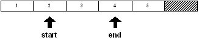
Použijeme-li u řady funkci insert nebo remove, posunou se hodnoty v řadě a proměnné start a end již neukazují na stejné hodnoty jako předtím. Je-li například z řady "odebrána" proměnná start, dojde k odebrání pouze jejího prvního členu:
remove start
[4 5]
first start
4
first end
5
Řada se posunula doleva a proměnné nyní odkazují na odlišné hodnoty.
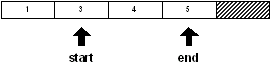
Nebudiž přehlédnuto, že na rozdíl od hodnot se vzdálenost proměnných od čela řady nezměnila i když posléze ukazují na jiné indexy. K podobné situaci dojde při použití funkce insert.
Tento vedlejší účinek úpravy řady může být někdy výhodný, někdy nevýhodný a je nutné jej vhodným způsobem korigovat.
11. Modifikační upřesnění
Funkce change, insert a remove lze doplnit různým upřesněním.
11.1 Part
Upřesnění /part přijímá číselné označení pozice v řadě a použije jej k omezení účinku funkce.
Například, pro následující řady:
str: "abcdef"
blk: [1 2 3 4 5 6]
lze změnit část objektu str a blk s použitím funkce change/part:
change/part str [1 2 3 4] 3
probe str
1234def
change/part blk "abcd" 3
probe blk
["abcd" 4 5 6]
Lze vložit část řady před chvost objektů str a
blk funkcí insert/part.
insert/part tail str "-ghijkl" 4
probe str
1234def-ghi
insert/part tail blk ["--" 7 8 9 10 11 12] 4
probe blk
["abcd" 4 5 6 "--" 7 8 9]
K odebrání části řad str a blk použijeme funkci remove/part. Nepřehlédněmež použití funkce find k získání pozice řady:
remove/part (find str "d") (find str "-")
probe str
1234-ghi
remove/part (find blk 4) (find blk "--")
probe blk
["abcd" "--" 7 8 9]
11.2 Only
Upřesnění /only změní nebo vloží blok jako blok, nikoliv jeho individuální hodnoty.
Příklady:
blk: [1 2 3 4 5 6]
Nahradíme 2 v blk blokem [a
b c] a vložíme [$1 $2
$3] na pozici 5.
change/only (find blk 2) [a b c]
probe blk
[1 [a b c] 3 4 5 6]
insert/only (find blk 5) [$1 $2 $3]
probe blk
[1 [a b c] 3 4 [$1.00 $2.00 $3.00] 5 6]
11.3 Dup
Upřesnění /dup vícekrát změní nebo vloží hodnotu.
Příklady:
str: "abcdefghi"
blk: [1 2 3 4 5 6]
Nahradíme první čtyři hodnoty v řetězci nebo bloku hvězdičkou:
change/dup str "*" 4
probe str
****efghi
change/dup blk "*" 4
probe blk
["*" "*" "*" "*" 5 6]
Vložíme pomlčku (-) čtyřikrát před poslední hodnotu v řetězci nebo bloku:
insert/dup (back tail str) #"-" 4
probe str
****efgh----i
insert/dup (back tail blk) #"-" 4
probe blk
["*" "*" "*" "*" 5 #"-" #"-" #"-" #"-" 6]
|